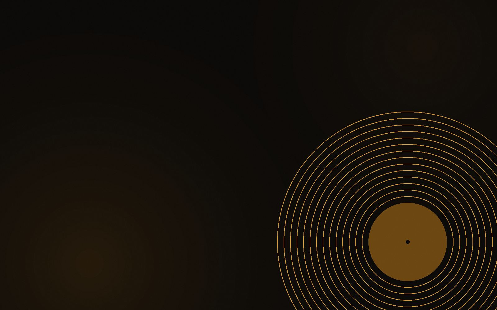
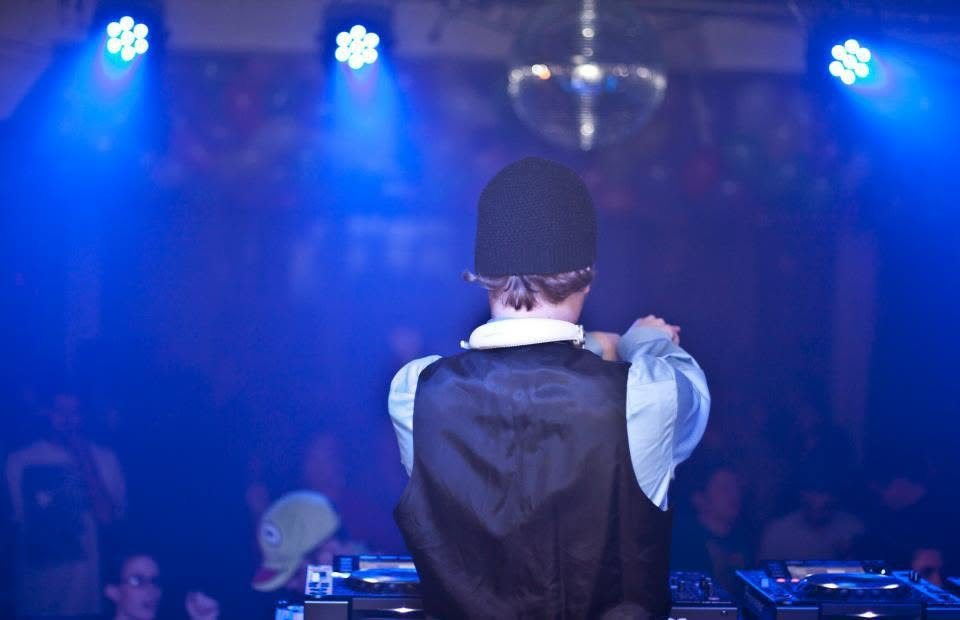

Copy color lab
Same paragraph, three schemes. The live site currently runs the Hybrid. All-blue body copy fails contrast over long reads (your instinct was right — it strains); all-white is safe but flat. Hybrid keeps white for reading and spends the blue where it earns attention.
A — All white
Unkle Funk makes deep, sexy, funky underground house — the warm, late-night kind built for the floor, not the algorithm. Twenty-five years behind the decks, fifteen in the studio.
Max readability. Zero personality in the copy itself — the neon has to do all the work.
B — All blue
Unkle Funk makes deep, sexy, funky underground house — the warm, late-night kind built for the floor, not the algorithm. Twenty-five years behind the decks, fifteen in the studio.
Looks cohesive for two lines, fatigues fast at paragraph length. #3BA7E0 on black is ~4.6:1 — passes AA for large text only.
C — Hybrid (live)
Unkle Funk makes deep, sexy, funky underground house — the warm, late-night kind built for the floor, not the algorithm. Twenty-five years behind the decks, fifteen in the studio.
White body, blue for links/emphasis/labels, neon glow reserved for headings. Reads clean, still feels like the sign's on.
Gallery layout variants
Four ways to run the About photo stack — all borderless, all captionless until you write the real lines. Currently live: Variant A with about1 → about2 → portrait. The Louisville DJ's United shot is out entirely.
VARIANT A — Centered column (live now)
Classic 3×1 stack down the center axis, alternating with the bio paragraphs. Calm, editorial, matches the centered rhythm of the whole page.


VARIANT B — Contact strip
Three square crops in a row after the full bio — reads like frames off a contact sheet. Tightest option; the photos become one object.
VARIANT C — Staggered offset
Alternating left/right offsets down the page — more motion, more magazine. Collapses to centered on mobile.
VARIANT D — Feature + pair
One hero-sized shot (best pro photo here) with two supporting squares. Strongest if one image clearly outclasses the others.
Photo pool on the server
Every image currently deployed, by filename — so you can call your picks by name. If the pro black-and-white event shots you mean aren't in this pool, upload them to the project and I'll slot them in.




To lock it in, just tell me: variant letter + three filenames in order + your captions when ready. Example: “C — portrait, about2, about1 — captions coming.” One message, I handle the rest.